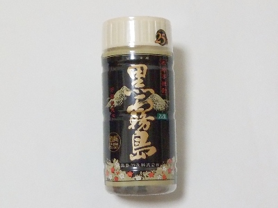

霧島酒造の黒霧島が人気の理由がわかりました。
更新日 : 2025/03/01

飲み屋さんでも酒屋さんでもよく見る人気のお酒です。
飲んだら確かに美味しいですね。私はアルコール25%のお酒はキツイって思うんですが、これはストレートでも美味しく飲めました。
ちょっと高くてもこの味ならいいかな。
宮崎県都城市下川東4丁目28号1番
更新日 : 2025/03/01

飲み屋さんでも酒屋さんでもよく見る人気のお酒です。
飲んだら確かに美味しいですね。私はアルコール25%のお酒はキツイって思うんですが、これはストレートでも美味しく飲めました。
ちょっと高くてもこの味ならいいかな。